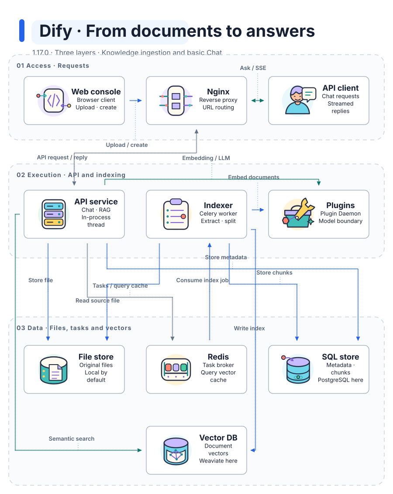
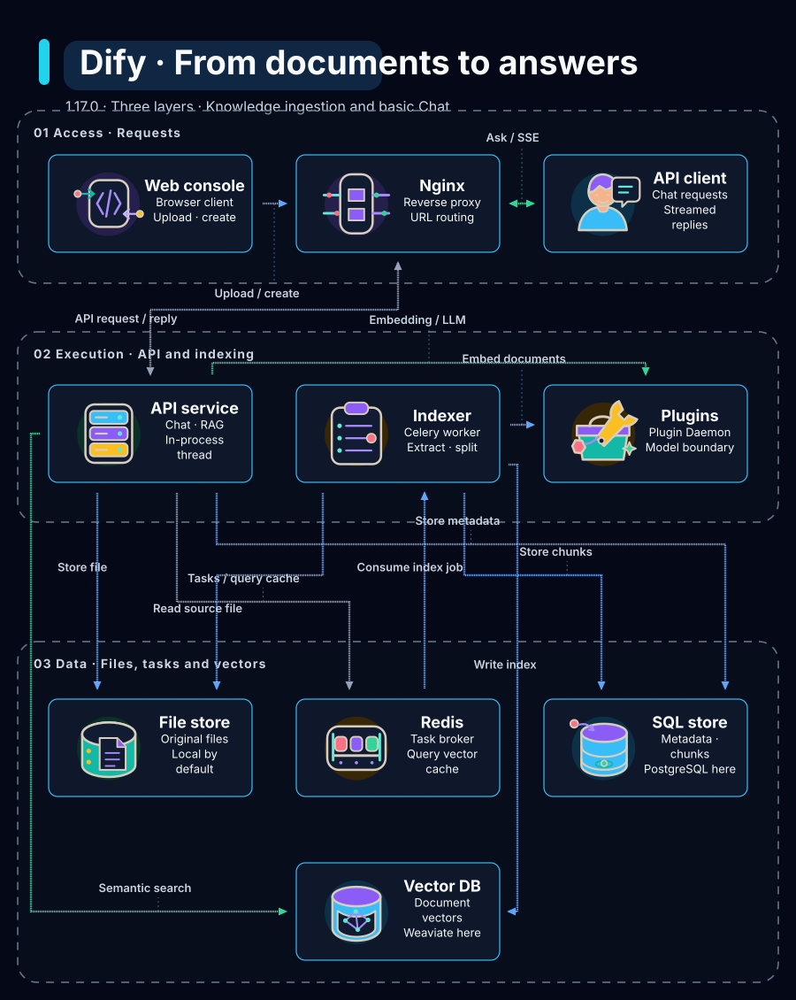

Minimal Light
Same architecture. A different visual treatment.

One source-backed, three-layer architecture in two styles. 10 nodes · 13 relations · Dify 1.17.0.
Source-reading draft: independent semantic review is pending. Dify runtime has not been tested.
Same architecture. A different visual treatment.

Same architecture. A different visual treatment.
